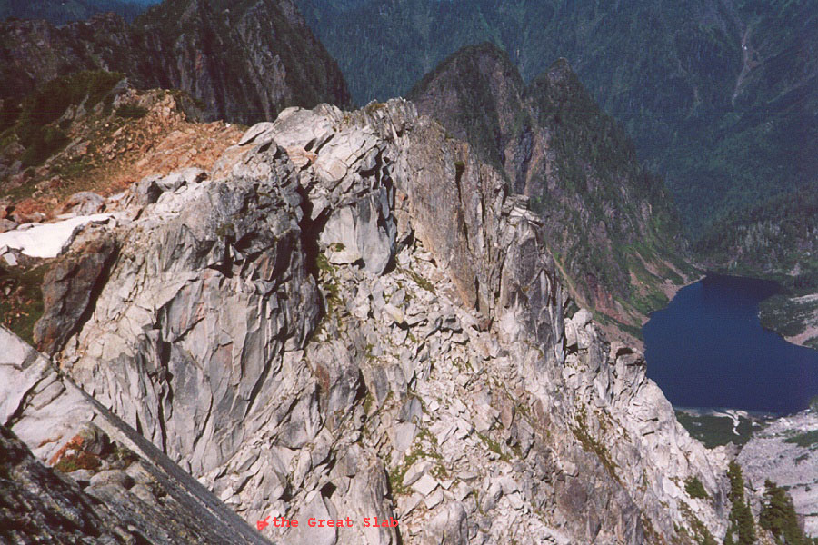
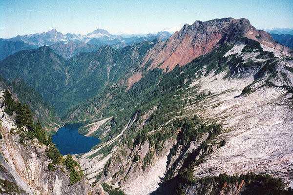
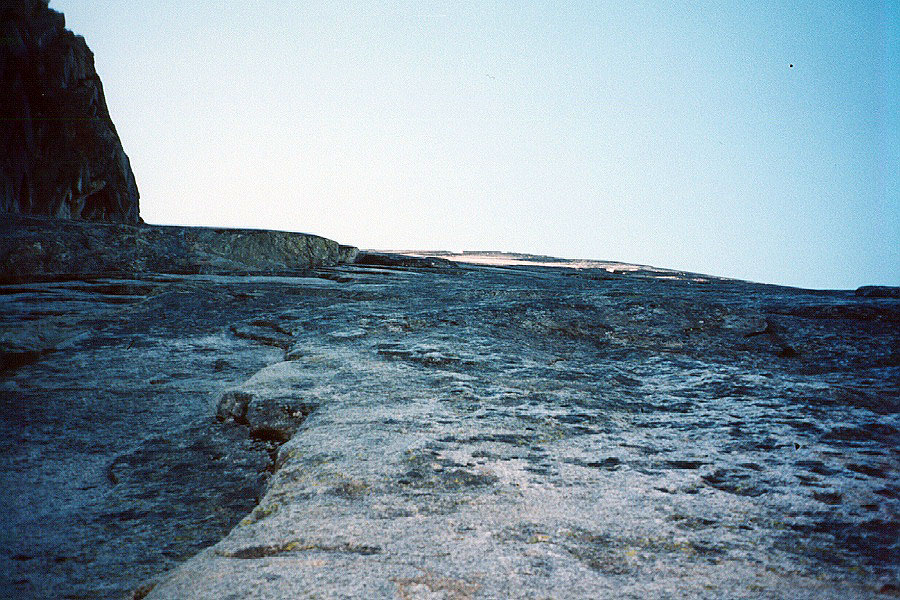
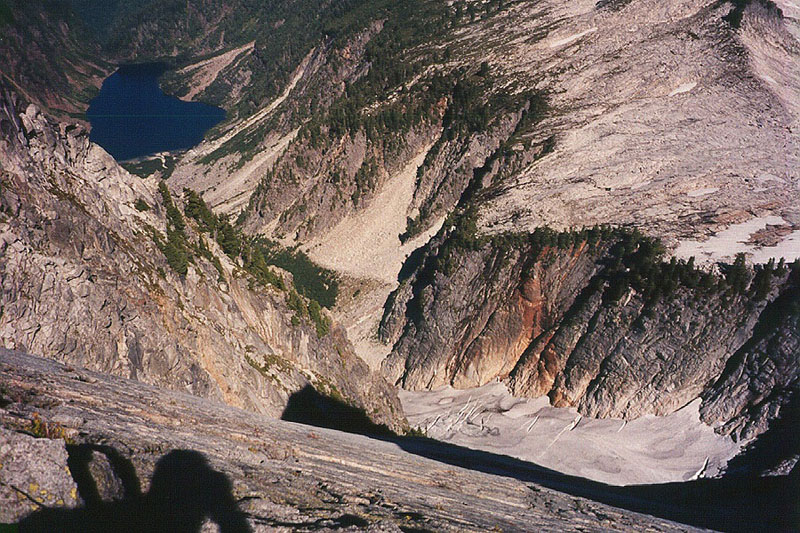
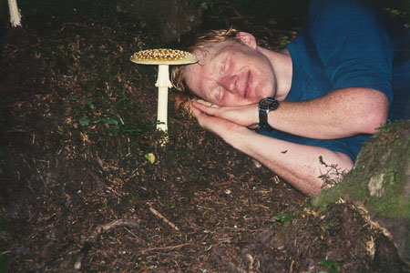

Vesper Peak North Face
This climb, with it’s fabled beautiful long slab, and tricky route-finding above the Vesper Glacier has been on my list a long time. Steve was also keen on the route, so together we set out on a fine Saturday morning. Earlier, we had planned to meet Alex and Tom for a climb of Big Four Mountain via the North Face. But I was pretty tired from a tough week at work, and all the cumulative weekends in the mountains of the past month. I wasn’t up for Big Four, and to boot, spent a sleepless night worrying about it. I was disappointed to bail on them for something easier, but I also find I don’t get very far when I’m not excited about something. So we met and said goodbye at the Big Four parking lot, and Steve and I continued to the Headlee Pass trailhead.





Amazingly, this was Steve’s first visit to anything on the Mountain Loop Highway. Oh the times I’ve had here! My first visits were drenched in rain and fog. Now I’ve learned to wait for the weather, and have really come to enjoy this area. The peaks are low, sometimes brushy, but very rugged, and crowded among each other. There are no flat spots aside from the valley floors. The forests are dank and dripping always. The rock is often of dubious quality, and trails are overgrown. But it’s not crowded, filled with mining history, and close to home! Yeehah!
We hiked through forest, crossed the stream, continued up a brushy, wet hillside, and gorged on blueberries in the basin below the pass. The cirq of surrounding mountains was very impressive. We attained the pass via short, steep switchbacks, and entered the valley dominated by Vesper and Sperry Peaks. Filling water bottles at the stream, we continued up steep and brushy trail to a high shoulder of Vesper. Traversing granite slabs, we came to a notch where we expected to drop onto the Vesper Glacier, still in shadow on the north side.
Doh! Steve forgot his crampons!
Doh! In the next instant, Steve sprained his ankle!
Holy cow, I considered tying him up to stop the run of bad luck, but that would probably have led to another Doh! moment. We sat, fighting back tears as Steve gingerly tested his ankle. Definitely out of commission. Looking closely at the glacier, we saw crampons really were a requirement, as there was steep hard snow and 3-4 small crevasses to deal with. There was another way to reach the route: traverse on rock and heather ledges to the base of the slab. The Beckey description calls the traverse “unpleasant,” and laments that some of the fun climbing is bypassed. I was definitely not ready to call it a day, so hatched a scheme to do the climb by myself. I took the rope and rack, intending to use it if I got to exposed, loose or difficult terrain.
I bid Steve farewell, and we planned to meet on the summit. He rested his ankle, and helped me make the traverse with some “routefinding shout-out.” ( “Up?!?” “…NO…GO DOWN AND RIGHT!…“) Initially, the traverse was easy walking and scrambling. At one point, I really had to think about a secure way to go down and across, not liking the muddy steep options available. I excavated a solid rock handhold from the mud to make the moves possible. Eventually, I neared the slab but reached very exposed terrain. Here I anchored to the cliff, changed into rock shoes, and got the rope out. I trailed it behind me, planning to start belaying when/if I needed to (and assuming I could find something to belay from!). Needless to say, I was moving very slowly and carefully. I climbed straight up on good rock, and before I knew it, I was walking on a wide ledge at the base of the slab. A little cairn marked the likely place to start upward.
The shaded granite slab looks very blank, but several lines can be seen. Moving left would put you in a corner, where protection opportunities would be greater, but the overall angle looked steeper. Moving up and slightly right seemed to keep the angle lower, and still keep you near some intermittent features that would provide good hand or footholds. I decided to go this way. I took a few deep breaths, looked at the glacier below, wiped the dirt off my shoes and started up.
Pad, pad, pad. It was very quiet, just my heartbeat and my shoes. I had entered a great silent sea. I felt very committed since the slab was too featureless to climb down. And there was little in the way of anchors for the rope. Places to relax did come in the form of horizontal flaring cracks, which made good holds. Some of them might hold a cam or a nut too. I continued up and right, not really thinking but concentrating totally on the task at hand. Eventually, I found a long flare that led up and left, taking me quickly to the top of the slab. Wow! Elatedly, I followed the crest to a flat area, and changed into boots. I looked for Steve and made the short hike to the summit. The views were incredible. I looked across at Sloan Peak, where I had stood the week before. I saw Columbia, Del Campo, and Mt. Dickerman, the other summits I’d climbed around here. I felt a great kinship with this mountain, having concentrated on it for what felt like a year during the space of an hour. I talked with a few others on the summit, and started down.
Steve hadn’t made the climb, being concerned about getting out safely. As it turned out, he could descend as quickly as anyone would want to, he just had to avoid a few awkward ankle positions. We promised to come back and do the entire climb together later.
I got home to find it had been quite a day in the mountains for many people. Alex and Tom had an adventure in the great brushfields of Big Four, making a series of committing rappels. Tragically, a climber died on the East Face of Chair Peak, after unroping on “easy,” but loose, terrain. There were two other minor injuries that I heard about on the news as well.